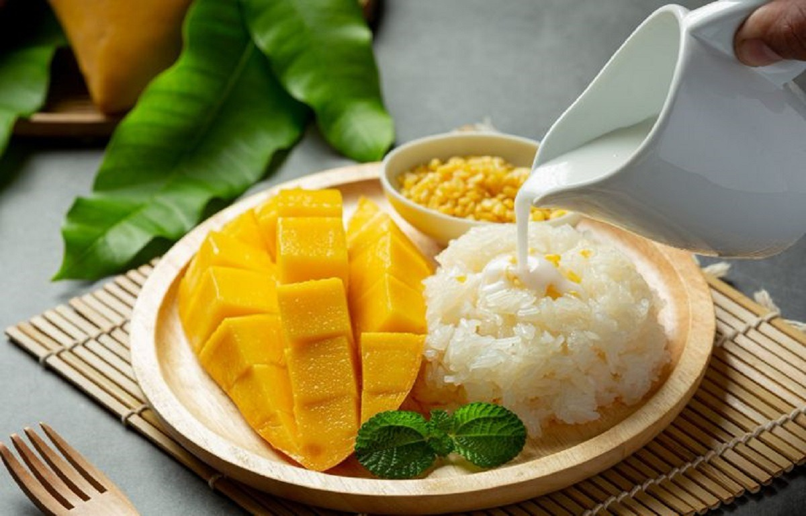
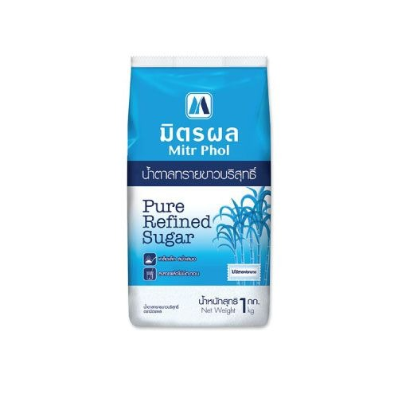
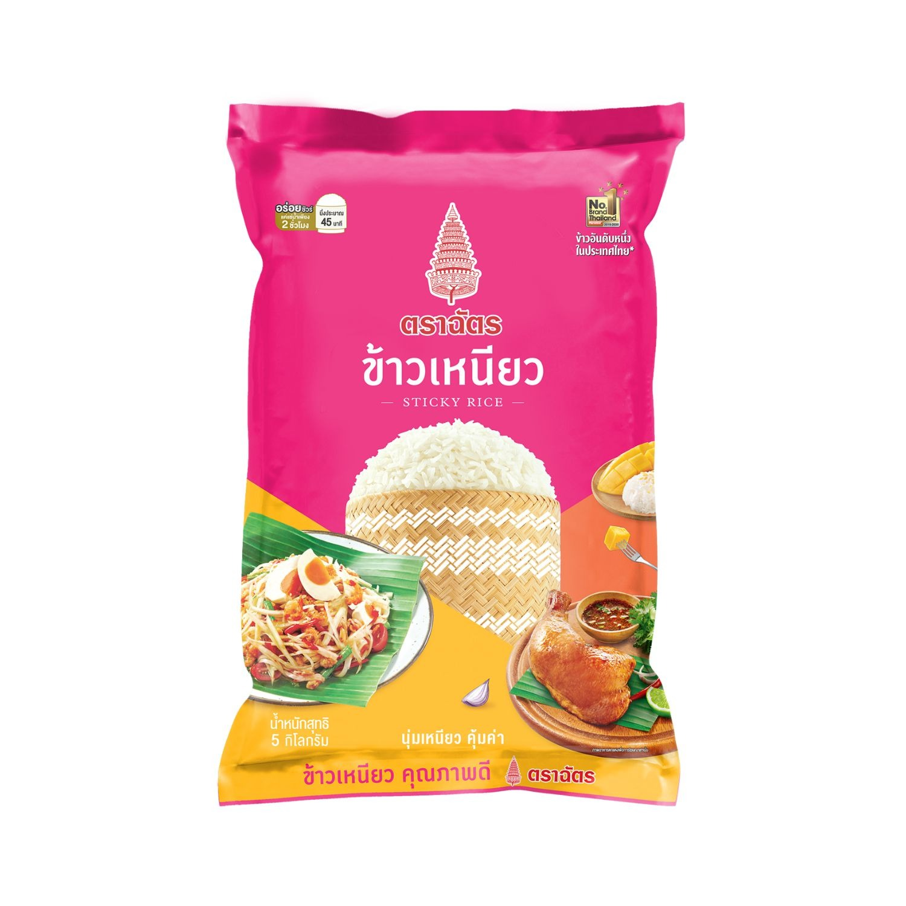

MANGO STICKY RICE
Prep time: 15 mins | Cooking time: 10 mins | 4 servings
Ingredients
1 cup sticky rice
1 cup coconut milk
1/2 teaspoon salt
1/4 cup sugar
2 ripe mangoes, peeled and sliced
Sesame seeds for garnish
 
Instructions
Preparation
Soak the sticky rice in water for at least 4 hours or overnight.
Steam the sticky rice for about 30 minutes until cooked through.
Cooking
In a saucepan, mix coconut milk, sugar, and salt, then bring to a simmer.
Pour half of the coconut mixture over the steamed sticky rice and let it absorb.
Serving
Serve the sticky rice with sliced mangoes and drizzle the remaining coconut milk over it.
Garnish with sesame seeds and enjoy!